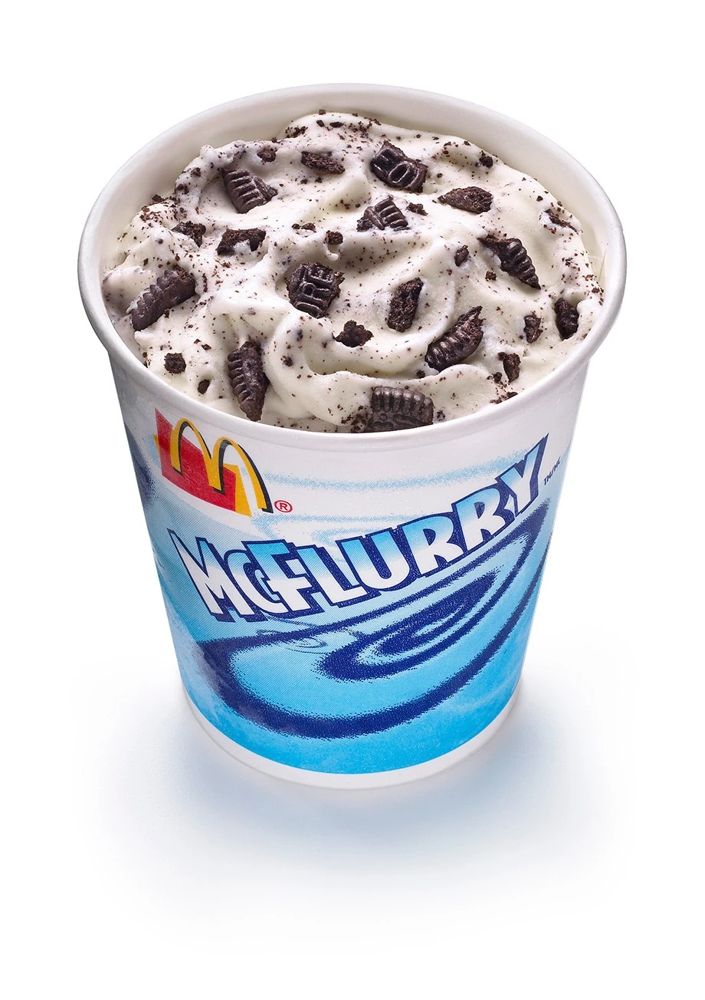
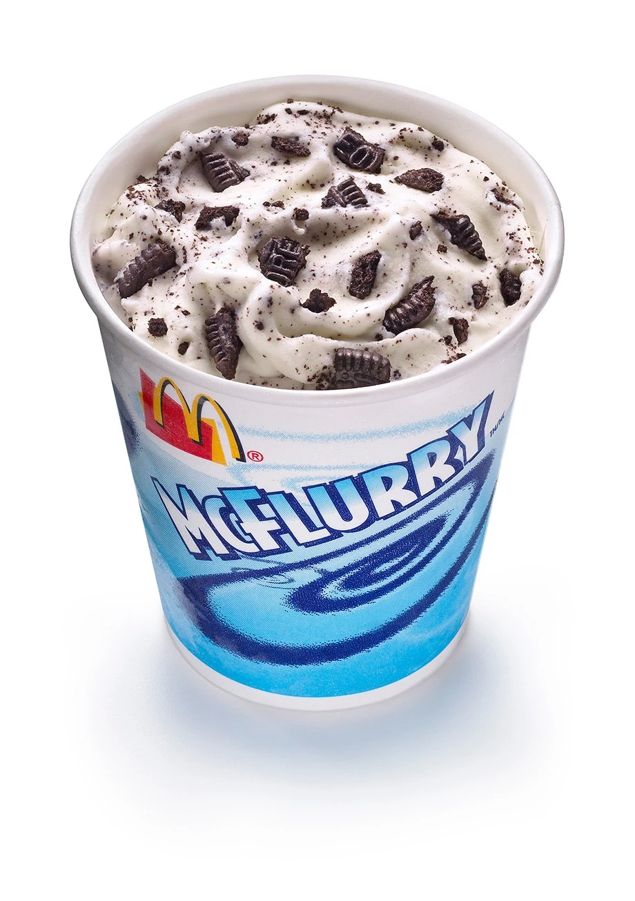
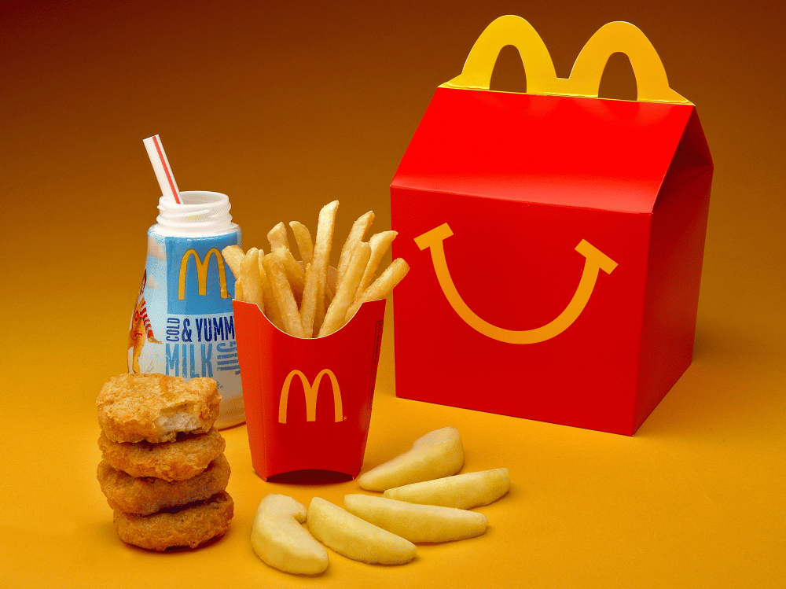

23/10/25: Ice Cream
Yesterday, I went to McDonald's and got their Oreo McFlurry.
Doing this for Task 4
Yesterday, I went to McDonald's and got their Oreo McFlurry.
Two popular and highly regarded contenders are the Teenie Beanie Babies and the McDonald's Changeables. The 1997 Teenie Beanie Babies promotion was one of the most successful in history, creating a collecting craze that drew massive crowds and even caused shortages. The McDonald's Changeables, which were transforming toys based on McDonald's food items, are also often cited by fans as a standout for their creativity and collectible appeal.
